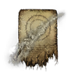

禱告
- 本頁依遊戲參數（版本 1.03.5）列出武器搭載的禱告：每個章節是一個系別，章首列出相關遺物詞條；只以「禱告」類型為條件的詞條列在「禱告類型相關詞條」，不在各章重複。系別名稱摘自遊戲內遺物詞條名稱，例如由「強化卡利亞劍的魔法」取「卡利亞劍」。武器與魔法見武器與魔法頁。
- 「相關遺物詞條」列出已由遊戲參數建立關聯的詞條。符合只表示存在參數關聯，不表示詞條對每一項都直接生效；作用方式與限制見詞條。沒有列出不表示沒有關係。只針對個別法術的詞條列在該法術名稱下方。
- 「FP 消耗」「耐力消耗」是遊戲參數的原始值，尚未套用遺物等減少消耗的效果。有蓄力消耗參數時，第二行列出「蓄力參數」的原值。此欄不判定法術是否支援蓄力；0 不代表實際不消耗，兩行也不可直接相加。持續施放的消耗不列出。
- 法術搭載在手杖或聖印記上。「搭載法器」欄列出具名的法器與搭載的槽位（R1、R2）；沒有名稱的法器變體依槽位只列出數量。
- 類型無法核實的法術引用列在武器頁的查證限制。
- 武器與法術名稱引用《艾爾登法環》本篇的遊戲文字，尚未確認與《黑夜君臨》一致；圖示取自 Eldenpedia。
禱告類型相關詞條
相關遺物詞條（依參數關聯）：強化禱告、減少 FP 消耗、【學者】對自己使用技藝時，能減少消耗的 FP
黃金律法基本主義
相關遺物詞條（依參數關聯）：強化黃金律法基本主義的禱告
| 法術 | FP 消耗 | 耐力消耗 | 搭載法器 |
|---|---|---|---|
| 光環Discus of Light | 3 | 20 | |
| 化三光環Triple Rings of Light | 23 | 28 | 未具名變體（R2）×3 |
| 拉達岡的光環Radagon's Rings of Light | 21蓄力參數 21 | 37蓄力參數 48 | 未具名變體（R2）×1 |
| 回歸性原理Law of Regression | 55 | 50 | 未具名變體（R2）×1 |
| 不變盾牌Immutable Shield | 15 | 10 | 未具名變體（R2）×1 |
| 糾死聖律Litany of Proper Death | 17 | 28 | 未具名變體（R2）×1 |
| 因果性原理Law of Causality | 22 | 20 | 未具名變體（R2）×1 |
| 聖律劍刃Order's Blade | 22 | 10 | 未具名變體（R2）×1 |
王城古龍信仰
相關遺物詞條（依參數關聯）：強化王城古龍信仰的禱告
| 法術 | FP 消耗 | 耐力消耗 | 搭載法器 |
|---|---|---|---|
| 死亡雷擊Death Lightning | 28蓄力參數 28 | 32蓄力參數 42 | 未具名變體（R1）×1未具名變體（R2）×1 |
| 雷電槍Lightning Spear相關遺物詞條（依參數關聯）：出擊時，武器禱告改為「雷電槍」※僅限能使用的武器類別 | 18蓄力參數 18 | 28蓄力參數 36 | |
| 古龍雷擊Ancient Dragons' Lightning Strike | 36蓄力參數 36 | 31蓄力參數 40 | 未具名變體（R2）×2 |
| 雷擊Lightning Strike | 19 | 32 | 未具名變體（R2）×1 |
| 冰雷槍Frozen Lightning Spear | 29 | 39 | 未具名變體（R2）×1 |
| 精準雷擊Honed Bolt | 12 | 29 | 未具名變體（R2）×1 |
| 古龍雷槍Ancient Dragons' Lightning Spear | 25 | 29 | 未具名變體（R2）×1 |
| 弗爾桑克斯的雷槍Fortissax's Lightning Spear | 35 | 42 | 未具名變體（R2）×1 |
| 蘭斯桑克斯的薙刀Lansseax's Glaive | 22 | 45 | 未具名變體（R2）×1 |
| 雷武器Electrify Armament | 27 | 10 | 未具名變體（R2）×1 |
| 龍雷庇佑Dragonbolt Blessing | 20 | 20 | 未具名變體（R2）×1 |
巨人火焰
相關遺物詞條（依參數關聯）：強化巨人火焰的禱告
| 法術 | FP 消耗 | 耐力消耗 | 搭載法器 |
|---|---|---|---|
| 火焰啊！O, Flame!相關遺物詞條（依參數關聯）：出擊時，武器禱告改為「火焰啊！」※僅限能使用的武器類別 | 16蓄力參數 16 | 24蓄力參數 31 | 未具名變體（R2）×1 |
| 火焰啊，傾注吧Flame, Fall Upon Them | 16蓄力參數 16 | 10蓄力參數 13 | 未具名變體（R2）×1 |
| 火焰啊，纏繞吧Whirl, O Flame! | 19蓄力參數 19 | 26蓄力參數 34 | 未具名變體（R2）×1 |
| 火焰啊，賜予我力量！Flame, Grant Me Strength | 28 | 16 | 未具名變體（R2）×1 |
| 火焰的庇佑啊Flame, Protect Me | 30 | 20 | 未具名變體（R2）×1 |
| 感受巨人火焰吧Giantsflame Take Thee | 30蓄力參數 30 | 34蓄力參數 44 | |
| 惡神火焰Flame of the Fell God | 34 | 42 | 未具名變體（R2）×1 |
| 火焰啊，吞噬一切！Burn, O Flame! | 26蓄力參數 30 | 36蓄力參數 47 | 未具名變體（R2）×1 |
| 火焰啊，噴發吧Surge, O Flame! | 1 | 2 | 未具名變體（R2）×1 |
狩獵神祇
相關遺物詞條（依參數關聯）：強化狩獵神祇的禱告
| 法術 | FP 消耗 | 耐力消耗 | 搭載法器 |
|---|---|---|---|
| 黑焰Black Flame | 18蓄力參數 18 | 25蓄力參數 33 | |
| 橫掃黑焰Scouring Black Flame | 21蓄力參數 21 | 29蓄力參數 38 | 未具名變體（R2）×1 |
| 黑焰儀式Black Flame Ritual | 30蓄力參數 30 | 39蓄力參數 51 | 未具名變體（R2）×1 |
| 黑焰刀刃Black Flame Blade | 15 | 10 | 未具名變體（R2）×2 |
| 黑焰庇佑Black Flame's Protection | 30 | 13 | 未具名變體（R2）×1 |
野獸
相關遺物詞條（依參數關聯）：強化野獸的禱告
| 法術 | FP 消耗 | 耐力消耗 | 搭載法器 |
|---|---|---|---|
| 獸石Bestial Sling | 7 | 19 | |
| 古蘭格的岩石Stone of Gurranq | 15 | 37 | 未具名變體（R2）×1 |
| 獸爪Beast Claw相關遺物詞條（依參數關聯）：出擊時，武器禱告改為「獸爪」※僅限能使用的武器類別 | 13蓄力參數 13 | 27蓄力參數 35 | 未具名變體（R2）×1 |
| 古蘭格的獸爪Gurranq's Beast Claw | 21 | 42 | 未具名變體（R2）×2 |
| 野獸活力Bestial Vitality | 18 | 10 | 未具名變體（R2）×1 |
癲火
相關遺物詞條（依參數關聯）：強化癲火的禱告
| 法術 | FP 消耗 | 耐力消耗 | 搭載法器 |
|---|---|---|---|
| 癲火The Flame of Frenzy | 16蓄力參數 16 | 30蓄力參數 39 | |
| 難耐癲火Unendurable Frenzy | 22蓄力參數 6 | 40蓄力參數 0 | 未具名變體（R2）×1 |
| 劃空癲火Frenzied Burst | 24蓄力參數 24 | 33蓄力參數 43 | 未具名變體（R2）×1 |
| 夏玻利利的嘶吼Howl of Shabriri | 21 | 38 | 未具名變體（R2）×1 |
龍饗
相關遺物詞條（依參數關聯）：強化龍饗的禱告
| 法術 | FP 消耗 | 耐力消耗 | 搭載法器 |
|---|---|---|---|
| 龍焰Dragonfire相關遺物詞條（依參數關聯）：出擊時，武器禱告改為「龍焰」※僅限能使用的武器類別 | 28蓄力參數 4 | 40蓄力參數 0 | |
| 亞基爾的火焰Agheel's Flame | 36蓄力參數 6 | 60蓄力參數 0 | 未具名變體（R2）×1 |
| 熔岩吐息Magma Breath | 30 | 40 | 未具名變體（R2）×1 |
| 席歐朵利克的熔岩Theodorix's Magma | 45 | 60 | 未具名變體（R2）×1 |
| 龍冰Dragonice | 36蓄力參數 4 | 48蓄力參數 0 | 未具名變體（R2）×1 |
| 玻列琉斯的冰霧Borealis's Mist | 48蓄力參數 6 | 60蓄力參數 0 | 未具名變體（R2）×1 |
| 腐敗吐息Rotten Breath | 36蓄力參數 4 | 48蓄力參數 0 | 未具名變體（R2）×1 |
| 艾格基斯的腐敗Ekzykes's Decay | 48蓄力參數 6 | 60蓄力參數 0 | 未具名變體（R2）×1 |
| 輝石吐息Glintstone Breath | 28蓄力參數 4 | 40蓄力參數 0 | 未具名變體（R2）×1 |
| 史瑪拉格的輝石Smarag's Glintstone Breath | 36蓄力參數 6 | 60蓄力參數 0 | 未具名變體（R2）×1 |
| 龍爪Dragonclaw | 24 | 35 | 未具名變體（R2）×1 |
| 龍咬Dragonmaw | 34 | 50 | 未具名變體（R2）×1 |
| 桂奧爾的咆哮Greyoll's Roar | 50 | 72 | 未具名變體（R2）×1 |
無已定義系別
本次建模範圍內無符合詞條
| 法術 | FP 消耗 | 耐力消耗 | 搭載法器 |
|---|---|---|---|
| 燃火Catch Flame | 10 | 17 | |
| 投火Flame Sling | 11蓄力參數 11 | 22蓄力參數 29 | 未具名變體（R1）×100未具名變體（R1、R2）×1 |
| 貴族氣場Noble Presence | 20蓄力參數 20 | 35蓄力參數 46 | 未具名變體（R2）×1 |
| 血焰爪痕Bloodflame Talons | 12 | 21 | 未具名變體（R2）×1 |
| 授血Bloodboon | 13 | 34 | 未具名變體（R2）×1 |
| 血焰刀刃Bloodflame Blade | 20 | 10 | 未具名變體（R2）×1 |
| 黃金魔力防護Barrier of Gold | 30 | 13 | 未具名變體（R2）×1 |
| 黃金樹庇佑Protection of the Erdtree | 30 | 50 | 未具名變體（R2）×1 |
| 拒絕Rejection | 9蓄力參數 9 | 24蓄力參數 31 | |
| 黃金之怒Wrath of Gold相關遺物詞條（依參數關聯）：出擊時，武器禱告改為「黃金之怒」※僅限能使用的武器類別 | 32蓄力參數 32 | 44蓄力參數 57 | |
| 緊急恢復Urgent Heal | 16 | 30 | 未具名變體（R2）×1 |
| 恢復Heal | 32 | 35 | 未具名變體（R2）×2 |
| 大恢復Great Heal | 45 | 40 | 未具名變體（R2）×1 |
| 王之恢復Lord's Heal | 55 | 45 | 未具名變體（R2）×1 |
| 黃金樹恢復Erdtree Heal | 65 | 50 | 未具名變體（R2）×1 |
| 恩惠賜福Blessing's Boon | 30 | 30 | 未具名變體（R2）×1 |
| 黃金樹恩惠Blessing of the Erdtree | 60 | 50 | 未具名變體（R2）×1 |
| 火防護Flame Fortification | 20 | 13 | 未具名變體（R2）×1 |
| 魔力防護Magic Fortification | 20 | 13 | 未具名變體（R2）×1 |
| 雷防護Lightning Fortification | 20 | 13 | 未具名變體（R2）×1 |
| 聖防護Divine Fortification | 20 | 13 | 未具名變體（R2）×1 |
| 王之聖防護Lord's Divine Fortification | 30 | 20 | 未具名變體（R2）×1 |
 誘敵幻影Shadow Bait | 15 | 14 | 未具名變體（R2）×1 |
| 黑暗Darkness | 24 | 24 | 未具名變體（R2）×1 |
| 黃金樹立誓Golden Vow | 47 | 50 | 未具名變體（R2）×1 |
| 艾爾登流星Elden Stars | 41 | 48 | 未具名變體（R2）×1 |
| 普拉頓桑克斯的凋亡Placidusax's Ruin | 62 | 75 | 未具名變體（R2）×1 |
| 蟲絲Pest Threads | 19 | 29 | 未具名變體（R2）×1 |
| 蠅群Swarm of Flies | 14 | 24 | 未具名變體（R2）×1 |
| 毒霧Poison Mist | 18 | 10 | 未具名變體（R2）×1 |
| 毒刃Poison Armament | 15 | 10 | 未具名變體（R2）×1 |
| 猩紅艾奧尼亞Scarlet Aeonia | 48 | 66 | 未具名變體（R2）×1 |
| 熔爐百相之尾Aspects of the Crucible: Tail | 20蓄力參數 20 | 32蓄力參數 42 | 未具名變體（R2）×1 |
| 熔爐百相之角Aspects of the Crucible: Horns | 18蓄力參數 18 | 38蓄力參數 49 | 未具名變體（R2）×1 |
| 熔爐百相之喉囊Aspects of the Crucible: Breath | 28蓄力參數 4 | 40蓄力參數 0 | 未具名變體（R2）×1 |
| 黑劍Black Blade | 26 | 51 | 未具名變體（R2）×2 |
| 火焰重罪Fire's Deadly Sin | 26蓄力參數 26 | 28蓄力參數 36 | 未具名變體（R2）×1 |
| 黃金雷防護Golden Lightning Fortification | 30 | 20 | 未具名變體（R2）×1 |
查證限制
- 遊戲參數沒有名稱，也沒有可用的《黑夜君臨》法術文字，名稱一律引用《艾爾登法環》本篇文字；沒有本篇名稱的法術以 ID 顯示。
- 系別只建立遺物詞條指定為對象的系別；其餘參數分類不顯示，該法術列在「無已定義系別」。
- 同一法器的不同變體搭載的法術可能不同，各自保留，不合併。搭載法器清單不是出擊時替換法術的相容清單。
- 以下詞條與禱告有關，但參數尚不足以列舉對象，本頁暫不列出：
- 延長魔法、禱告的有效時間：有延長倍率，但沒有可確認適用法術的條件。
- 角色詞條中只有名稱或狀態線索者，例如【送葬者】輔助禱告。
- 強化咆哮與吐息：依攻擊段分類作用，參數可確認部分龍饗等禱告的攻擊段屬於該分類，但引用資料不完整。